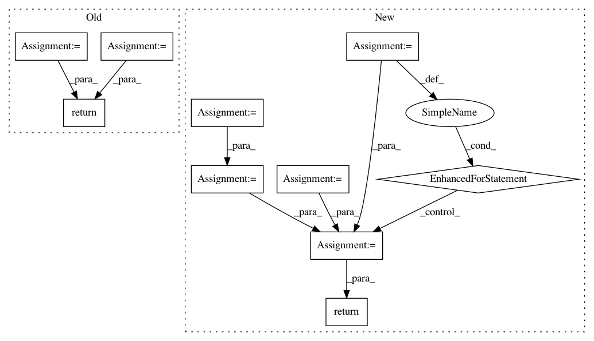

58f057c0dd1b28cb388c3fd9538bc67289c4e15e,perfkitbenchmarker/benchmarks/fio_benchmark.py,,GenerateJobFileString,#Any#Any#Any#Any#,130
Before Change
if against_device:
filename = disk.GetDevicePath()
size = device_fill_size
else:
filename = posixpath.join(disk.mount_point, DEFAULT_TEMP_FILE_NAME)
size = str(min(MAX_FILE_SIZE_GB,
int(DISK_USABLE_SPACE_FRACTION * disk.disk_size))) + "G"
return str(jinja2.Template(JOB_FILE_TEMPLATE,
undefined=jinja2.StrictUndefined).render(
filename=filename,
size=size,
iodepths=io_depths))
def JobFileString(fio_jobfile, disk, against_device,
device_fill_size, io_depths):
After Change
else:
filename = posixpath.join(disk.mount_point, DEFAULT_TEMP_FILE_NAME)
globals_template = jinja2.Template(GLOBALS_TEMPLATE,
undefined=jinja2.StrictUndefined)
job_template = jinja2.Template(JOB_TEMPLATE,
undefined=jinja2.StrictUndefined)
file_string = str(globals_template.render(filename=filename))
for scenario in scenarios:
file_string = file_string + str(job_template.render(
name=scenario["name"],
rwkind=scenario["rwkind"],
blocksize=scenario["blocksize"],
iodepths=io_depths))
return file_string
def JobFileString(fio_jobfile, disk, against_device,
scenario_strings, io_depths):
In pattern: SUPERPATTERN
Frequency: 3
Non-data size: 10
Instances
Project Name: GoogleCloudPlatform/PerfKitBenchmarker
Commit Name: 58f057c0dd1b28cb388c3fd9538bc67289c4e15e
Time: 2015-08-26
Author: nlavine@google.com
File Name: perfkitbenchmarker/benchmarks/fio_benchmark.py
Class Name:
Method Name: GenerateJobFileString
Project Name: tensorly/tensorly
Commit Name: 3dba9054b3c7bf4b9edabb430eb457a07e05b6ca
Time: 2018-07-05
Author: jean.kossaifi@gmail.com
File Name: tensorly/mps_tensor.py
Class Name:
Method Name: mps_to_tensor
Project Name: d2l-ai/d2l-zh
Commit Name: 3a770cbc97085c2cd4eaa0a46b2bc037f35389c2
Time: 2017-10-25
Author: muli@cs.cmu.edu
File Name: utils.py
Class Name:
Method Name: evaluate_accuracy